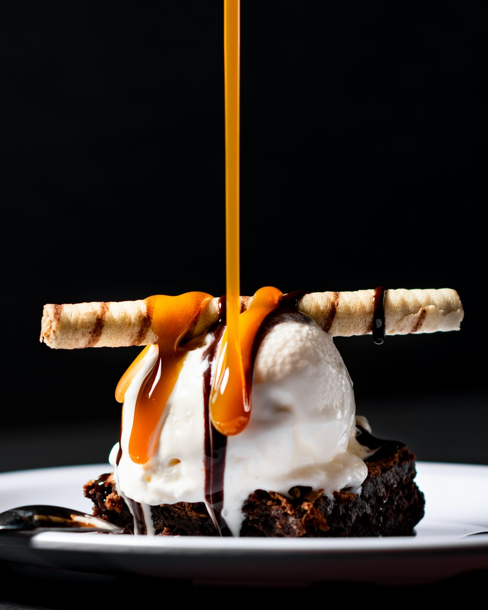

Dessert Recipe

Ingredients
- 1 ½ cups finely crushed pretzels
- ⅓ cup firmly packed dark brown sugar
- 6 tablespoons unsalted butter, melted
- ⅛ teaspoon salt, or to taste
Steps
- Preheat the oven to 350 degrees F (175 degrees C). Lightly grease a 9-inch tart pan with a removable bottom.
- Mix pretzel crumbs, brown sugar, melted butter, and salt together in a bowl until mixture resembles wet sand. Pour into the tart pan, and press very firmly and evenly up the sides and into the bottom of the pan.
- Place tart pan onto a baking sheet and bake until crust is golden brown, 10 to 15 minutes. Allow crust to cool completely in pan, about 30 minutes.
- Combine heavy cream, butter, vanilla extract, and salt in a small saucepan over medium-low heat and cook until butter is melted and mixture begins to bubble, 3 to 5 minutes. Remove from heat, set aside, and keep warm.
- Combine sugar, corn syrup, and water in a large light-colored saucepan with high sides. Cook over medium heat, swirling occasionally, until mixture is amber in color, 10 to 12 minutes. Reduce heat to low, and very carefully whisk in reserved cream-butter mixture, as caramel mixture will bubble up and steam; stir constantly.
- Insert a candy thermometer into the mixture and cook over low heat, stirring occasionally, until caramel reaches 245 degrees F (118 degrees C), 25 to 30 minutes. Carefully pour caramel into an even layer in the baked and cooled crust. Allow caramel layer to cool until set, 1 to 2 hours.
- Prepare the chocolate layer. Pour stout beer into a saucepan and bring to a boil over medium-high heat. Cook until stout has been reduced to 1/4 cup, 20 to 25 minutes. Pour reduced stout into a large bowl. Stir in chopped chocolate, chocolate chips, butter, and vanilla and set aside.
- Heat cream in a small saucepan over medium-low heat until just simmering, 3 to 5 minutes. Pour over chocolate and allow to sit for 5 minutes. Stir until chocolate is completely melted and smooth. Carefully pour melted chocolate over the cooled caramel layer, making sure not overflow the pan.
- Use a toothpick to pop any air bubbles that may arise. Allow chocolate layer to cool and set up completely, 1 to 2 hours.